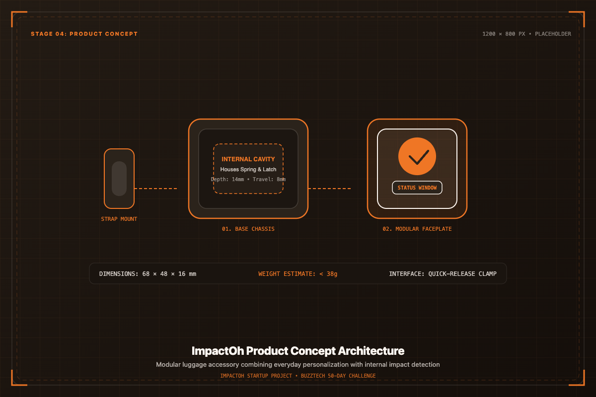

CAD RENDERING • STAGE 04
Concept Integrated

Smart impact detection, redesigned for modern luggage.
ImpactOh is a customisable luggage accessory that adds personality to your bag while incorporating impact detection as an additional functional feature.

A balanced fusion of visual luggage expression and transit impact awareness.
ImpactOh is a luggage-focused product concept developed to address the problem of unnoticed impacts during transportation and handling. The project began with the idea of creating a compact, affordable and single-use impact indicator and gradually evolved into a customisable luggage accessory with impact detection as an additional functional feature.
Detect and indicate significant impact events to inform travelers if their bag experienced excessive physical shock during handling.
Give luggage a more personal and visually attractive identity through modular, customizable exterior faceplates and collectible designs.
Develop the mechanism within a compact luggage-friendly form that clips effortlessly onto standard baggage handles, straps, or zippers.
Baggage handles millions of transfers, yet impact transparency remains limited.
Luggage can experience impacts during transportation, handling and movement, but these events may go unnoticed by the owner. Existing impact indicators address this problem, but many solutions are primarily designed for industrial and logistics applications.
* Problem mapping based on baggage movement stages during multimodal transit. No unsupported damage claims or unverifiable statistical estimates.
Analyzing industrial shock indicators to identify the opportunity for consumer luggage.
The first stage of the project focused heavily on understanding existing impact-detection products and competitors. The team investigated existing impact indicators, their working principles, functionality, pricing, usability, applications, target customers, product form, and industrial versus consumer orientation. Existing commercial impact indicators such as ShockWatch were studied as key examples of the category to understand established physical sensing mechanisms and industry implementations.
Studied capillary fluid release, mechanical springs, and surface-tension disruption triggers.
Evaluated single-use industrial adhesive labels and tubular sensor envelopes.
Analyzed industrial procurement costs and single-use logistics workflows.
Identified that solutions cater to freight carriers and corporate shippers rather than personal luggage.
| Aspect | Existing Impact Indicators (e.g. ShockWatch) | ImpactOh Direction |
|---|---|---|
| Primary purpose | Industrial shipping and supply-chain transit monitoring | Luggage personality and consumer impact awareness |
| Target usage | Single-use industrial shipping crates and commercial pallets | Everyday consumer travel and repeated luggage attachment |
| Product form | Industrial adhesive warning sticker or glass capillary tube | Durable, clip-on luggage accessory with modular faceplates |
| Customisation | None — standard utilitarian warning labels | High — customizable exterior aesthetic and collectibility |
| Consumer appeal | Low — strictly utilitarian and industrial appearance | High — modern travel aesthetic and personal lifestyle appeal |
| Impact detection | Capillary fluid dispersion or single-axis indicator | Movement-based mechanical shock trigger mechanism |
| Development focus | Logistics carrier liability and freight damage disputes | Consumer utility, luggage identity and physical peace of mind |
Evaluating the standalone viability of impact sensing in consumer travel.
During Week 2, the team conducted detailed market research evaluating existing competitors, product functionality, pricing models, usability barriers, target markets, and the potential consumer market for a standalone impact-detection product.
A weekly breakdown of engineering, design iteration, and strategic milestones.
A clear understanding of existing competitors, market solutions and the opportunity for ImpactOh.
The team identified the need for an additional value proposition while simultaneously developing the technical direction.
The consumer-facing concept and initial technical mechanism were established.
The mechanism and product structure became an integrated system.
The CAD files were refined into a stronger prototype-ready digital design.
CAD finalisation and material selection completed; digital design fully prepared for physical fabrication.
Systematic assessment of physical properties required for luggage durability and prototyping.
Ability to endure repeated handling, drops, and transit friction without housing cracking or deformation.
Readily available polymer stock and filament supplies suitable for iterative local prototyping.
Compatibility with additive manufacturing (3D printing) and eventual high-volume plastic injection molding.
Balancing material resilience with affordable unit economics for consumer accessibility.
Low surface friction between sliding internal components to ensure reliable trigger motion.
Rapid turnaround compatibility for validating physical tolerances and fit prior to hard tooling.